第6章：时间操纵操作者¶
时间就是一切。反应式编程的核心思想是对异步事件流进行时间建模。在这方面，Combine框架提供了一系列的操作符，允许你处理时间。特别是，序列如何对时间作出反应并转换值。
正如你在本章中所看到的，管理你的数值序列的时间维度是很简单和直接的。这是使用像Combine这样的框架的最大好处之一。
开始¶
为了学习时间操作符，你将用一个动画的Xcode Playground进行练习，该Playground将数据如何随时间流动可视化。本章附带了一个入门级的Playground，你可以在projects文件夹中找到。
该Playground被分为几个页面。你将使用每个页面来练习一个或多个相关的操作符。它还包括一些现成的类、函数和样本数据，对建立例子很有帮助。
如果你将Playground设置为显示渲染的标记，在每一页的底部会有一个下一步链接，你可以点击它进入下一页。
Note
要切换显示渲染标记的开关，从菜单中选择Editor ▸ Show Rendered/Raw Markup。
你也可以从左侧边栏的项目导航器，甚至是页面顶部的跳转栏中选择你想要的页面。在Xcode中，有很多方法可以使用!
看看Xcode，你会看到窗口左上方的侧边栏控件。
- 确保左边的侧边栏按钮被切换，这样你就可以看到
Playground的页面列表：
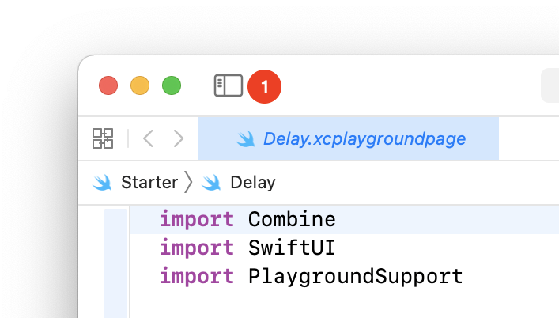
- 接下来，看看窗口的右上方。你会看到视图控制：
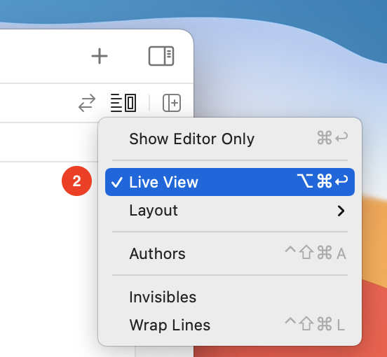
用实时视图显示编辑器。这将显示你在代码中建立的序列的实时视图。这就是真正的行动将发生的地方!
- 显示
Debug区域对于本章中的大多数例子都很重要。使用窗口右下角的以下图标，或使用键盘上的快捷键Command-Shift-Y，来切换调试区的位置：
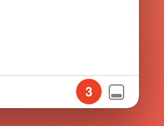
Playground不工作？¶
有时Xcode可能会"发作"，不能正常运行您的Playground。如果这种情况发生在你身上，请在Xcode中打开Preferences对话框并选择Locations标签。点击Derived Data位置旁边的箭头，在下面的截图中用红色的圆圈1来描述。它显示了Finder中的DerivedData文件夹。
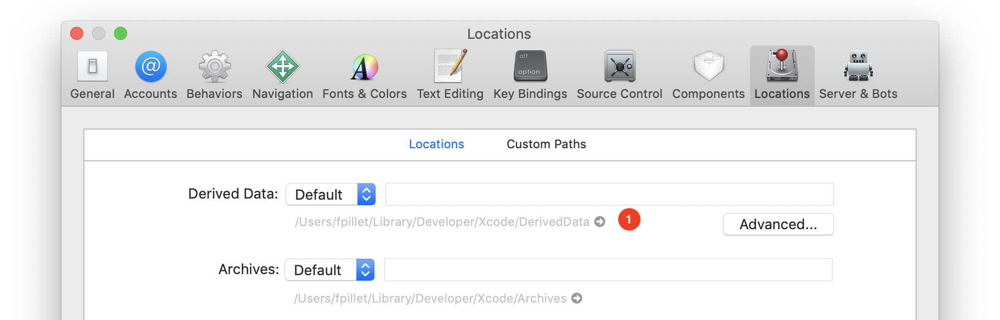
退出Xcode，将DerivedData文件夹移到垃圾箱，然后再次启动Xcode。你的Playground现在应该可以正常工作了!
转移时间¶
时不时地，你需要时间旅行。虽然Combine不能帮助修复你过去的关系错误，但它可以将时间冻结一段时间，让你等到自我克隆的时候。
最基本的时间操纵运算符从发布者那里延迟数值，使你看到它们的时间比实际发生的时间晚。
delay(for:tolerance:scheduler:options)操作符对整个数值序列进行时间转移。每次上游发布者发布一个值，delay都会保留一段时间，然后在你指定的调度器上，在你要求的延迟后发布它。
打开delay playground页面。你会看到的第一件事是，你不仅导入了Combine框架，还导入了SwiftUI! 这个动画Playground是用SwiftUI和Combine构建的。当你觉得有冒险的心情时，仔细阅读Sources文件夹中的代码会是一个好主意。
但首先要做的是。从定义几个常量开始，你就可以在以后进行调整了：
let valuesPerSecond = 1.0
let delayInSeconds = 1.5
你要创建一个每秒钟发射一个值的发布者，然后延迟1.5秒，并同时显示两条时间线以进行比较。一旦你完成了本页的代码，你就可以调整常数，并在时间线中观察结果。
接下来，创建你需要的发布者：
// 1
let sourcePublisher = PassthroughSubject<Date, Never>()
// 2
let delayedPublisher = sourcePublisher.delay(for: .seconds(delayInSeconds), scheduler: DispatchQueue.main)
// 3
let subscription = Timer
.publish(every: 1.0 / valuesPerSecond, on: .main, in: .common)
.autoconnect()
.subscribe(sourcePublisher)
把这个代码分解开来：
sourcePublisher是一个简单的Subject，你将给它提供一个Timer发射的日期。值的类型在这里并不重要。你只关心当一个发布者发出一个值时的成像，以及这个值在延迟后出现的情况。delayedPublisher将延迟来自sourcePublisher的值，并在主调度器上发射它们。你将在第17章"调度器"中了解所有关于调度器的知识。现在，指定值必须在主队列中结束，准备好显示订阅它们。- 创建一个定时器，在主线程上每秒钟提供一个值。用
autoconnect()立即启动它，并通过sourcePublisher主题提供它发出的值。
Note
这个特殊的定时器是FoundationTimer类上的一个组合扩展。它需要一个RunLoop和RunLoop.Mode，而不是你所期望的DispatchQueue。你将在第11章"定时器"中了解所有关于定时器的知识。另外，定时器是一类可连接的发布者的一部分。这意味着它们在开始发射数值之前需要被连接到。你可以使用autoconnect()，在第一次订阅时立即连接。
你将进入创建两个视图的部分，这两个视图将使你对事件进行可视化。把这段代码添加到你的Playground上：
// 4
let sourceTimeline = TimelineView(title: "Emitted values (\(valuesPerSecond) per sec.):")
// 5
let delayedTimeline = TimelineView(title: "Delayed values (with a \(delayInSeconds)s delay):")
// 6
let view = VStack(spacing: 50) {
sourceTimeline
delayedTimeline
}
// 7
PlaygroundPage.current.liveView = UIHostingController(rootView: view.frame(width: 375, height: 600))
在这个代码中，你：
- 创建一个
TimelineView，它将显示定时器的值。TimelineView是一个SwiftUI视图，它的代码可以在Source/Views.swift找到。 - 创建另一个
TimelineView来显示延迟的值。 - 创建一个简单的
SwiftUI垂直堆栈来显示两个时间线，一个在另一个上面。 - 为这个
Playground页面设置实时视图。额外的frame(widht:height:)修改器只是为了帮助为Xcode的预览设置一个固定的框架。
在这个阶段，你在屏幕上看到两个空的时间线。你现在需要用每个发布者的值来填充它们! 把这个最后的代码添加到Playground上：
sourcePublisher.displayEvents(in: sourceTimeline)
delayedPublisher.displayEvents(in: delayedTimeline)
在这最后一段代码中，你将源码和延迟发布者连接到它们各自的时间线，以显示事件。
一旦你保存了这些源码的变化，Xcode就会重新编译Playground代码，然后......看一下实时视图窗格! 终于来了!
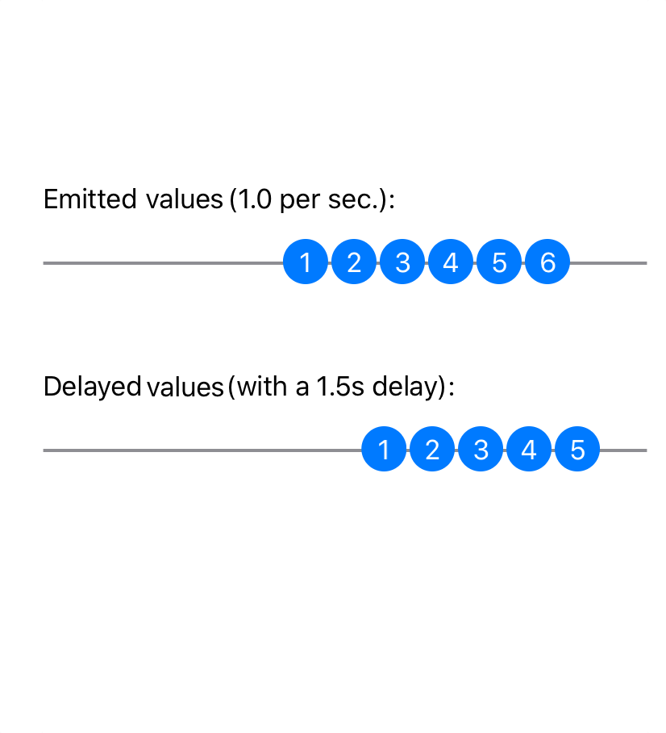
你会看到两条时间线。上面的时间线显示的是定时器发出的数值。底部的时间线显示了同样的值，延迟了。圆圈内的数字反映了发射的数值的数量，而不是它们的实际内容。
Note
尽管看到一个实时可观察的图表是令人兴奋的，但一开始它可能会让人感到困惑。静态时间线的数值通常是向左对齐的。但是，如果你仔细想想，它们也会像你现在观察到的动画图一样，把最新的放在右边。
收集数值¶
在某些情况下，你可能需要在指定的时间间隔内从一个发布者那里收集数值。这是一种缓冲的形式，可能很有用。例如，当你想在短时间内平均一组数值并输出平均值时。
通过点击底部的下一步链接，或在项目导航器或跳转栏中选择它，切换到收集页面。
和前面的例子一样，你将从一些常数开始：
let valuesPerSecond = 1.0
let collectTimeStride = 4
当然，阅读这些常数可以让你了解这一切的发展方向。现在就创建你的发布者：
// 1
let sourcePublisher = PassthroughSubject<Date, Never>()
// 2
let collectedPublisher = sourcePublisher
.collect(.byTime(DispatchQueue.main, .seconds(collectTimeStride)))
像前面的例子一样，你：
- 设置一个源发布者--一个将转发定时器发出的值的主体。
- 创建一个
collectedPublisher，使用collectTimeStride操作符收集它在collectTimeStride的步长中收到的值。该操作符将这些值组作为数组排放到指定的调度器上：DispatchQueue.main。
Note
你可能记得在第3章"转换操作符"中学习过collect操作符，在那里你用一个简单的数字来定义如何将值分组。这个collect的重载接受了一个分组的策略；在本例中是按时间分组。
你将再次使用Timer来定期发射数值，就像你对delay操作符做的那样：
let subscription = Timer
.publish(every: 1.0 / valuesPerSecond, on: .main, in: .common)
.autoconnect()
.subscribe(sourcePublisher)
接下来，像前面的例子一样创建时间线视图。然后，将Playground的实时视图设置为垂直堆叠，显示源时间线和收集值的时间线：
let sourceTimeline = TimelineView(title: "Emitted values:")
let collectedTimeline = TimelineView(title: "Collected values (every \(collectTimeStride)s):")
let view = VStack(spacing: 40) {
sourceTimeline
collectedTimeline
}
PlaygroundPage.current.liveView = UIHostingController(rootView: view.frame(width: 375, height: 600))
最后，用两个发布者的事件填充时间线：
sourcePublisher.displayEvents(in: sourceTimeline)
collectedPublisher.displayEvents(in: collectedTimeline)
你已经完成了! 现在看一会儿实时视图：
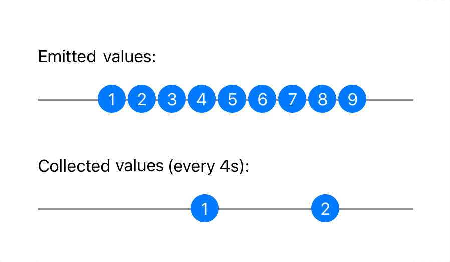
你看到数值以固定的时间间隔出现在发出的数值时间线上。在它下面，你看到每隔四秒，收集的价值时间线就会显示一个单一的价值。但这是什么呢？
你可能已经猜到了，这个值是在过去四秒内收到的值的一个数组。你可以改进一下显示方式，看看里面到底有什么东西! 回到你创建collectedPublisher对象的那一行。在它下面添加flatMap操作符的使用，所以它看起来像这样：
let collectedPublisher = sourcePublisher
.collect(.byTime(DispatchQueue.main, .seconds(collectTimeStride)))
.flatMap { dates in dates.publisher }
你还记得你在第三章"转换操作符"中学习的朋友flatMap吗？你在这里把它用得很好。每次collect发出它所收集的一组数值时，flatMap都会将其再次分解为单独的数值，但会紧接着发出。为此，它使用了Collection的publisher扩展，将一个数值序列变成一个Publisher，立即将序列中的所有数值作为单个数值发射出去。
现在，看看它对时间线的影响：
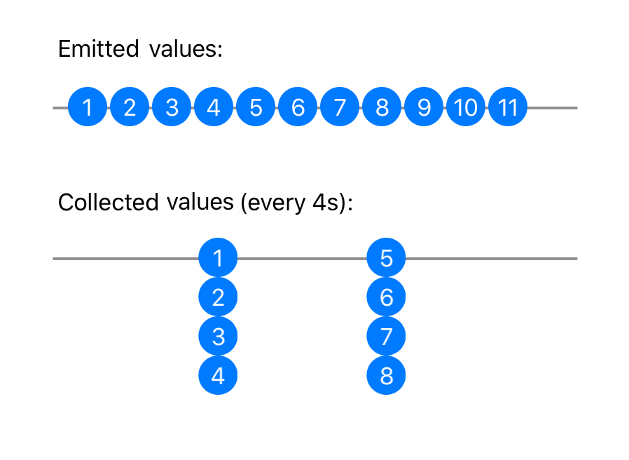
现在你可以看到，每隔四秒，collect就会发出一个数组，里面是上一个时间间隔内收集到的数值。
收集数值（第二部分）¶
collect(_:options:)操作符提供的第二个选项允许你以固定的时间间隔继续收集数值。它还允许你限制收集的数值的数量。
保持在同一个收集页面，并在顶部collectTimeStride下面添加一个新的常数：
let collectMaxCount = 2
接下来，在collectedPublisher之后创建一个新的发布者：
let collectedPublisher2 = sourcePublisher
.collect(.byTimeOrCount(DispatchQueue.main,
.seconds(collectTimeStride),
collectMaxCount))
.flatMap { dates in dates.publisher }
这一次，你使用.byTimeOrCount(Context, Context.SchedulerTimeType.Stride, Int)变体，一次最多收集collectMaxCount值。这意味着什么呢？继续添加代码，你会发现的!
在collectedTimeline和let view = VStack...之间为第二个收集发布者添加一个新的TimelineView：
let collectedTimeline2 = TimelineView(title: "Collected values (at most \(collectMaxCount) every \(collectTimeStride)s):")
当然还要把它添加到堆叠的视图列表中，所以view看起来像这样：
let view = VStack(spacing: 40) {
sourceTimeline
collectedTimeline
collectedTimeline2
}
最后，确保它在时间轴上显示它所发出的事件，在你的Playground的末尾添加以下内容：
collectedPublisher2.displayEvents(in: collectedTimeline2)
现在，让这条时间线运行一段时间，以便你能见证其中的差别：
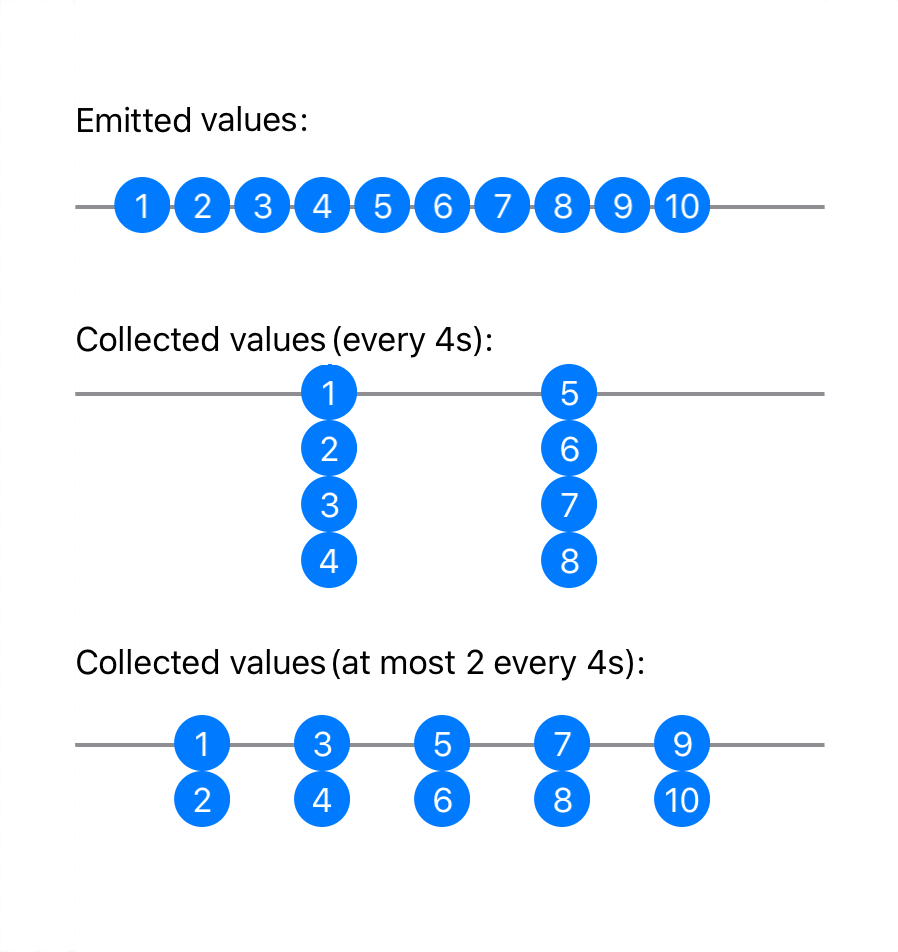
你可以看到，第二条时间线一次只能收集两个值，这是collectMaxCount常数的要求。这是一个很有用的工具。
暂缓事件的发生¶
在对用户界面进行编码时，你经常要处理文本字段。使用Combine将文本字段的内容连接到一个动作是一项常见的任务。例如，你可能想发送一个搜索URL请求，返回一个与文本字段中输入的内容相匹配的项目列表。
但当然，你不想在用户每次键入一个字母时都发送一个请求！你需要某种机制来帮助你的用户。你需要某种机制来帮助接收输入的文本，只有当用户完成了一段时间的输入之后。
Combine提供了两个操作符，可以在这里帮助你：debounce和throttle。让我们来探索它们！
Debounce¶
切换到名为Debounce的Playground页面。确保调试区是可见的--View ▸ Debug Area ▸ Activate Console--这样你就可以看到debounce发出的数值的打印结果。
从创建几个发布者开始：
// 1
let subject = PassthroughSubject<String, Never>()
// 2
let debounced = subject
.debounce(for: .seconds(1.0), scheduler: DispatchQueue.main)
// 3
.share()
在这个代码中，你：
- 创建一个源发布者，它将发出字符串。
- 使用
debounce在subject的发射中等待一秒。然后，它将发送在这一秒的时间间隔内发送的最后一个值，如果有的话。这样做的效果是允许每秒钟最多发送一个值。 - 你要多次订阅
debounced。为了保证结果的一致性，你使用share()创建一个单一的订阅点到debounce，它将在同一时间向所有订阅者显示相同的结果。
Note
深入研究share()操作符超出了本章的范围。只需记住，当需要向一个发布者的单个订阅者提供相同的结果时，它是有帮助的。你将在第13章"资源管理"中了解更多关于share()的信息。
在接下来的几个例子中，你将使用一组数据来模拟用户在一个文本字段中输入文字。不要键入这个 - 它已经在Sources/Data.swift中为你实现了：
public let typingHelloWorld: [(TimeInterval, String)] = [
(0.0, "H"),
(0.1, "He"),
(0.2, "Hel"),
(0.3, "Hell"),
(0.5, "Hello"),
(0.6, "Hello "),
(2.0, "Hello W"),
(2.1, "Hello Wo"),
(2.2, "Hello Wor"),
(2.4, "Hello Worl"),
(2.5, "Hello World")
]
模拟用户在0.0秒开始打字，在0.6秒后暂停，并在2.0秒恢复打字。
Note
你在调试区看到的时间值可能会有一到二十分之一秒的偏差。因为你将使用DispatchQueue.asyncAfter()在主队列上发射数值，你可以保证数值之间的最小时间间隔，但可能不完全是你要求的那样。
在playground的Debounce页面中，创建两个时间线来可视化事件，并将它们连接到两个发布者上：
let subjectTimeline = TimelineView(title: "Emitted values")
let debouncedTimeline = TimelineView(title: "Debounced values")
let view = VStack(spacing: 100) {
subjectTimeline
debouncedTimeline
}
PlaygroundPage.current.liveView = UIHostingController(rootView: view.frame(width: 375, height: 600))
subject.displayEvents(in: subjectTimeline)
debounced.displayEvents(in: debouncedTimeline)
你现在已经熟悉了这种Playground结构，你在屏幕上堆放时间线，并将它们与发布者连接起来进行事件显示。
这一次，你要做的事情更多。打印每个发布者发出的值，以及它们出现的时间（自开始）。这将帮助你弄清发生了什么。
添加这段代码：
let subscription1 = subject
.sink { string in
print("+\(deltaTime)s: Subject emitted: \(string)")
}
let subscription2 = debounced
.sink { string in
print("+\(deltaTime)s: Debounced emitted: \(string)")
}
每个订阅都会打印它收到的值，以及自启动以来的时间。deltaTime是一个在Sources/DeltaTime.swift中定义的动态全局变量，用来格式化Playground开始运行以来的时间差。
现在你需要给你的主体提供数据。这次你将使用一个预制的数据源，模拟用户输入文本。它全部定义在Sources/Data.swift中，你可以随意修改它。看一看，你会发现它是一个模拟用户输入"Hello World"的文字。
把这段代码添加到Playground页面的末尾：
subject.feed(with: typingHelloWorld)
feed(with:)方法接收一个数据集，并在预先定义的时间间隔内将数据发送给给定的subject。这是一个方便的模拟和模拟数据输入的工具! 当你为你的代码写测试时，你可能想保留这个，因为你会写测试，不是吗？
现在看看结果：
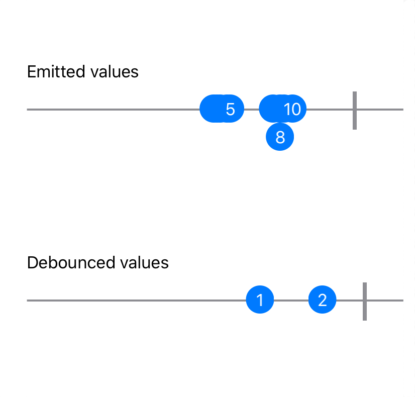
你看到顶部的发射值，总共有11个字符串被推送到sourcePublisher。你可以看到，用户在两个词之间停顿了一下。这就是debounce发射捕获的输入的时间。
你可以通过查看打印出来的调试区来确认这一点：
+0.0s: Subject emitted: H
+0.1s: Subject emitted: He
+0.2s: Subject emitted: Hel
+0.3s: Subject emitted: Hell
+0.5s: Subject emitted: Hello
+0.6s: Subject emitted: Hello
+1.6s: Debounced emitted: Hello
+2.1s: Subject emitted: Hello W
+2.1s: Subject emitted: Hello Wo
+2.4s: Subject emitted: Hello Wor
+2.4s: Subject emitted: Hello Worl
+2.7s: Subject emitted: Hello World
+3.7s: Debounced emitted: Hello World
你可以看到，在0.6秒时，用户暂停，在2.1秒时才恢复输入。同时，你配置了debounce来等待一秒钟的停顿。它答应了（在1.6秒），并发出了最新收到的数值。
在结束时也一样，打字在2.7秒结束，debounce在一秒后的3.7秒启动。很好!
Note
有一件事需要注意，就是发布者的完成。如果你的发布者在最后一个值发出后立即完成，但在为debounce配置的时间结束前完成，你将永远不会在发布者中看到最后一个值。
节流¶
debounce允许的暂缓模式非常有用，所以Combine提供了一个近似值：throttle(for:scheduler:latest:)。它与debounce非常接近，但不同之处在于需要两个操作符。
切换到Playground上的Throttle页面并开始编码。首先，你需要一个常数，像往常一样：
let throttleDelay = 1.0
// 1
let subject = PassthroughSubject<String, Never>()
// 2
let throttled = subject
.throttle(for: .seconds(throttleDelay), scheduler: DispatchQueue.main, latest: false)
// 3
.share()
分解这个代码：
- 源发布者将发出字符串。
- 你的节流主体现在只会在每一秒钟的间隔内发射它从
subject收到的第一个值，因为你把latest设置为false。 - 就像前面的操作符
debounce一样，在这里添加share()操作符可以保证所有订阅者在同一时间看到来自节流主体的相同输出。
创建时间线，使事件可视化，并将其连接到两个发布者：
let subjectTimeline = TimelineView(title: "Emitted values")
let throttledTimeline = TimelineView(title: "Throttled values")
let view = VStack(spacing: 100) {
subjectTimeline
throttledTimeline
}
PlaygroundPage.current.liveView = UIHostingController(rootView: view.frame(width: 375, height: 600))
subject.displayEvents(in: subjectTimeline)
throttled.displayEvents(in: throttledTimeline)
现在你还想打印每个发布者发出的值，以便更好地了解发生了什么。添加这段代码：
let subscription1 = subject
.sink { string in
print("+\(deltaTime)s: Subject emitted: \(string)")
}
let subscription2 = throttled
.sink { string in
print("+\(deltaTime)s: Throttled emitted: \(string)")
}
同样，你要给你的源发布者提供一个模拟的"Hello World"用户输入。把这最后一行添加到你的Playground页面：
subject.feed(with: typingHelloWorld)
你的Playground已经准备好了! 现在你可以在实时视图中看到正在发生的事情：
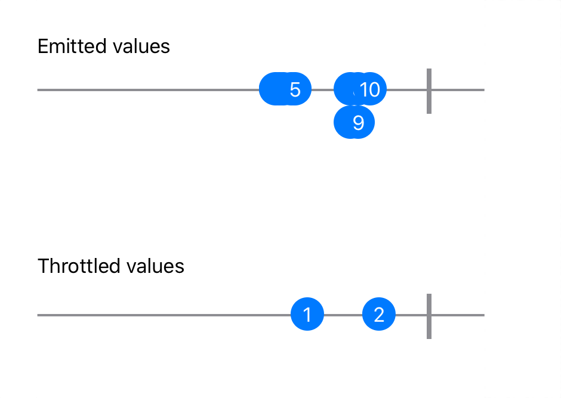
这不是很令人费解吗？它看起来和以前的debounce输出没有什么不同! 嗯，实际上是这样的。
首先，仔细看一下两者。你可以看到由throttle发出的值在时间上略有不同。
第二，为了更好地了解发生了什么，看看调试控制台：
+0.0s: Subject emitted: H
+0.0s: Throttled emitted: H
+0.1s: Subject emitted: He
+0.2s: Subject emitted: Hel
+0.3s: Subject emitted: Hell
+0.5s: Subject emitted: Hello
+0.6s: Subject emitted: Hello
+1.0s: Throttled emitted: He
+2.2s: Subject emitted: Hello W
+2.2s: Subject emitted: Hello Wo
+2.2s: Subject emitted: Hello Wor
+2.4s: Subject emitted: Hello Worl
+2.7s: Subject emitted: Hello World
+3.0s: Throttled emitted: Hello W
这显然是不同的! 你可以在这里看到一些有趣的事情：
- 当主体发出它的第一个值时，
throttle立即转发它。然后，它开始节制输出。 - 在
1.0秒，throttle发出了"He"。记住你要求它在一秒钟后给你发送第一个值（从最后一个开始）。 - 在
2.2秒时，继续打字。你可以看到，在这个时候，throttle没有发出任何东西。这是因为没有从源发布者那里收到新的值。 - 在
3.0秒，打字完成后，throttle再次启动，再次输出第一个值，即2.2秒的值。
这就是debounce和throttle之间的根本区别。
debounce等待它收到的值的暂停，然后在指定的时间间隔后发出最新的值。throttle等待指定的时间间隔，然后发射它在该时间间隔内收到的第一个或最新的数值。它不关心暂停的问题。
要看看当你把latest改为true时会发生什么，把你对节流发布者的设置改为如下：
let throttled = subject
.throttle(for: .seconds(throttleDelay), scheduler: DispatchQueue.main, latest: true)
.share()
现在，在调试区观察结果输出：
+0.0s: Subject emitted: H
+0.0s: Throttled emitted: H
+0.1s: Subject emitted: He
+0.2s: Subject emitted: Hel
+0.3s: Subject emitted: Hell
+0.5s: Subject emitted: Hello
+0.6s: Subject emitted: Hello
+1.0s: Throttled emitted: Hello
+2.0s: Subject emitted: Hello W
+2.3s: Subject emitted: Hello Wo
+2.3s: Subject emitted: Hello Wor
+2.6s: Subject emitted: Hello Worl
+2.6s: Subject emitted: Hello World
+3.0s: Throttled emitted: Hello World
节流的输出正好发生在1.0秒和3.0秒，时间窗口中的数值是最新的，而不是最早的。将此与前面例子中debounce的输出进行比较：
...
+1.6s: Debounced emitted: Hello
...
+3.7s: Debounced emitted: Hello World
输出是一样的，但是`debounce'从暂停中被延迟了。
计时结束¶
在这一轮的时间操作中，接下来是一个特殊的操作：超时。它的主要目的是在语义上区分一个实际的计时器和一个超时条件。因此，当超时操作符启动时，它要么完成发布者，要么发出一个你指定的错误。在这两种情况下，发布者都会终止。
切换到超时Playground页面。开始添加这段代码：
let subject = PassthroughSubject<Void, Never>()
// 1
let timedOutSubject = subject.timeout(.seconds(5), scheduler: DispatchQueue.main)
timedOutSubject发布者将在五秒后超时，而上游发布者不发出任何值。这种形式的timeout迫使发布者完成，没有任何失败。
你现在需要添加你的时间线，以及一个让你触发事件的按钮：
let timeline = TimelineView(title: "Button taps")
let view = VStack(spacing: 100) {
// 1
Button(action: { subject.send() }) {
Text("Press me within 5 seconds")
}
timeline
}
PlaygroundPage.current.liveView = UIHostingController(rootView: view.frame(width: 375, height: 600))
timedOutSubject.displayEvents(in: timeline)
- 这是一个新的! 你在时间轴上方添加一个按钮，按下后通过源主题发送一个新值。每次你按下按钮时，
action闭包将执行。
Note
你是否注意到你在使用一个发出Void值的主体？是的，这完全是合法的! 它预示着事情的发生。但是，没有特定的值可以携带。所以，你只是用Void作为值的类型。这是一个很常见的情况，Subject有一个扩展的send()函数，在Output类型是Void的情况下不需要参数。这样你就不用写尴尬的subject.send(())语句了!
你的Playground页面现在已经完成了。看着它的运行，什么也不做：timeout将在五秒后触发，并完成发布者的工作。
现在，再次运行它。这一次，在少于五秒的时间间隔内继续按下按钮。发布者永远不会完成，因为timeout没有启动。
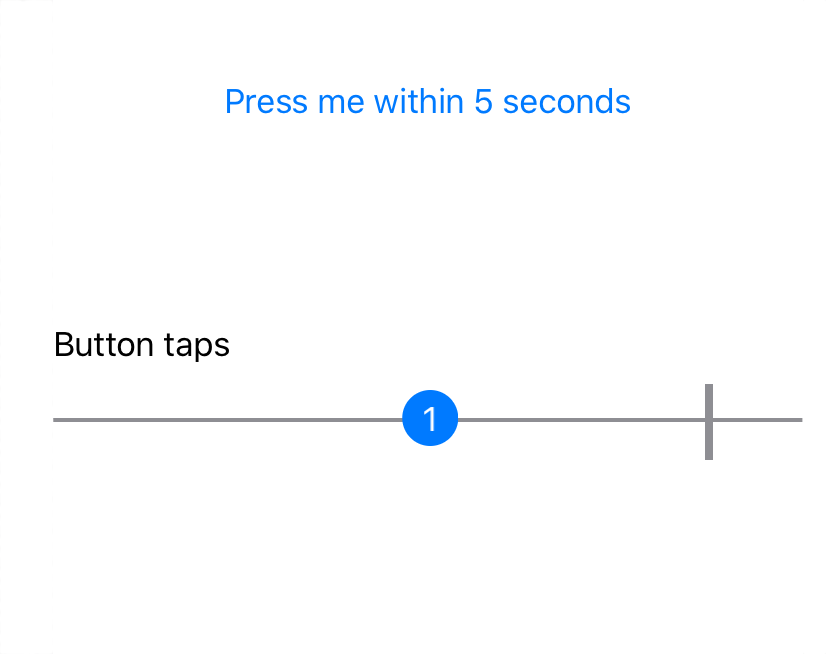
当然，在很多情况下，简单的完成一个发布者并不是你想要的。相反，你需要timeout发布者发送一个失败，这样你就可以准确地在这种情况下采取行动。
转到Playground页面的顶部，定义你想要的错误类型：
enum TimeoutError: Error {
case timedOut
}
接下来，修改subject的定义，将错误类型从Never更改为TimeoutError。 您的代码应如下所示：
let subject = PassthroughSubject<Void, TimeoutError>()
现在你需要修改对timeout的调用。 此运算符的完整签名是 timeout(_:scheduler:options:customError:)。 这是您提供自定义错误类型的机会！
将创建 timedOutSubject 的行修改为：
let timedOutSubject = subject.timeout(.seconds(5),
scheduler: DispatchQueue.main,
customError: { .timedOut })
现在，当您运行Playground并且五秒钟内没有按下按钮时，您可以看到 timedOutSubject 发出了失败。
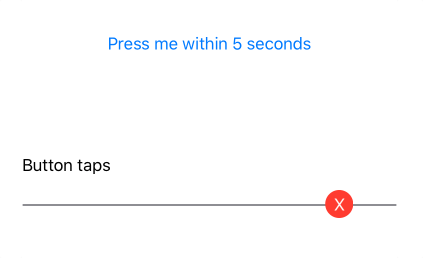
现在分配给这个算子的时间已经用完了，让我们转到本节的最后一个。
测量时间¶
为了完成时间操纵运算符的汇总，您将查看一个不操纵时间而只是测量时间的特定运算符。 当您需要找出发布者发出的两个连续值之间经过的时间时，measureInterval(using:) 运算符是您的工具。
切换到MeasureInterval游乐场页面。 首先创建一对发布者：
let subject = PassthroughSubject<String, Never>()
// 1
let measureSubject = subject.measureInterval(using: DispatchQueue.main)
measureSubject 将在您指定的调度程序上发出测量值。在这里，主队列。
现在像往常一样，添加几个时间表：
let subjectTimeline = TimelineView(title: "Emitted values")
let measureTimeline = TimelineView(title: "Measured values")
let view = VStack(spacing: 100) {
subjectTimeline
measureTimeline
}
PlaygroundPage.current.liveView = UIHostingController(rootView: view.frame(width: 375, height: 600))
subject.displayEvents(in: subjectTimeline)
measureSubject.displayEvents(in: measureTimeline)
最后，有趣的部分来了。 打印出两个发布者发出的值，然后提供主题：
let subscription1 = subject.sink {
print("+\(deltaTime)s: Subject emitted: \($0)")
}
let subscription2 = measureSubject.sink {
print("+\(deltaTime)s: Measure emitted: \($0)")
}
subject.feed(with: typingHelloWorld)
运行您的游乐场并查看调试区域！ 这是您看到 measureInterval(using:) 发出的内容的地方：
+0.0s: Subject emitted: H
+0.0s: Measure emitted: Stride(magnitude: 16818353)
+0.1s: Subject emitted: He
+0.1s: Measure emitted: Stride(magnitude: 87377323)
+0.2s: Subject emitted: Hel
+0.2s: Measure emitted: Stride(magnitude: 111515697)
+0.3s: Subject emitted: Hell
+0.3s: Measure emitted: Stride(magnitude: 105128640)
+0.5s: Subject emitted: Hello
+0.5s: Measure emitted: Stride(magnitude: 228804831)
+0.6s: Subject emitted: Hello
+0.6s: Measure emitted: Stride(magnitude: 104349343)
+2.2s: Subject emitted: Hello W
+2.2s: Measure emitted: Stride(magnitude: 1533804859)
+2.2s: Subject emitted: Hello Wo
+2.2s: Measure emitted: Stride(magnitude: 154602)
+2.4s: Subject emitted: Hello Wor
+2.4s: Measure emitted: Stride(magnitude: 228888306)
+2.4s: Subject emitted: Hello Worl
+2.4s: Measure emitted: Stride(magnitude: 138241)
+2.7s: Subject emitted: Hello World
+2.7s: Measure emitted: Stride(magnitude: 333195273)
这些值有点令人费解，不是吗？ 事实证明，根据文档，measureInterval 发出的值的类型是“提供的调度程序的时间间隔”。 在 DispatchQueue 的情况下，TimeInterval 定义为“使用此类型的值创建的 DispatchTimeInterval，以纳秒为单位。”。
您在这里看到的是从源主题接收到的每个连续值之间的计数（以纳秒为单位）。 您现在可以修复显示以显示更具可读性的值。 修改从 measureSubject 打印值的代码，如下所示：
let subscription2 = measureSubject.sink {
print("+\(deltaTime)s: Measure emitted: \(Double($0.magnitude) / 1_000_000_000.0)")
}
现在，您将在几秒钟内看到值。
但是如果你使用不同的调度器会发生什么呢？ 您可以使用 RunLoop 而不是 DispatchQueue 来尝试！
Note
您将在第 17 章“调度程序”中深入探索 RunLoop 和 DispatchQueue 调度程序。
回到文件顶部，创建第二个使用 RunLoop 的主题：
let measureSubject2 = subject.measureInterval(using: RunLoop.main)
您无需费心连接新的时间线视图，因为有趣的是调试输出。 将第三个订阅添加到您的代码中：
let subscription3 = measureSubject2.sink {
print("+\(deltaTime)s: Measure2 emitted: \($0)")
}
现在，您还将看到 RunLoop 调度程序的输出，其幅度直接以秒表示：
+0.0s: Subject emitted: H
+0.0s: Measure emitted: 0.016503769
+0.0s: Measure2 emitted: Stride(magnitude: 0.015684008598327637)
+0.1s: Subject emitted: He
+0.1s: Measure emitted: 0.087991755
+0.1s: Measure2 emitted: Stride(magnitude: 0.08793699741363525)
+0.2s: Subject emitted: Hel
+0.2s: Measure emitted: 0.115842671
+0.2s: Measure2 emitted: Stride(magnitude: 0.11583995819091797)
...
您用于测量的调度程序实际上取决于您的个人喜好。 对所有事情都坚持使用DispatchQueue通常是个好主意。 但这是你个人的选择！
挑战¶
挑战：数据¶
如果时间允许，您可能想尝试一点挑战来充分利用这些新知识！
打开项目/挑战文件夹中的初学者挑战游乐场。 你会看到一些代码在等着你：
- 发出整数的主题。
- 向对象提供神秘数据的函数调用。
在这些部分之间，您的挑战是：
- 按
0.5秒的批次对数据进行分组。 - 将分组数据转换为字符串。
- 如果提要中的暂停时间超过
0.9秒，请打印👏表情符号。 提示：为此步骤创建第二个发布者并将其与订阅中的第一个发布者合并。 - 打印它。
Note
要将Int转换为Character，您可以执行Character(Unicode.Scalar(value)!)之类的操作。
如果你正确地编码了这个挑战，你会在Debug区域看到一个打印的句子。 它是什么？
解决方案¶
您将在challenge/Final.playground Xcode游乐场中找到该挑战的解决方案。
这是解决方案代码：
// 1
let strings = subject
// 2
.collect(.byTime(DispatchQueue.main, .seconds(0.5)))
// 3
.map { array in
String(array.map { Character(Unicode.Scalar($0)!) })
}
// 4
let spaces = subject.measureInterval(using: DispatchQueue.main)
.map { interval in
// 5
interval > 0.9 ? "👏" : ""
}
// 6
let subscription = strings
.merge(with: spaces)
// 7
.filter { !$0.isEmpty }
.sink {
// 8
print($0)
}
从顶部，您：
- 创建从发出字符串的主题派生的第一个发布者。
- 使用
collect()使用.byTime策略以0.5秒的批次对数据进行分组。 - 将每个整数值映射到一个 Unicode 标量，然后映射到一个字符，然后使用
map将整个整数值转换为一个字符串。 - 创建从主题派生的第二个发布者，它测量每个字符之间的间隔。
- 如果间隔大于
0.9秒，将值映射到👏表情符号。 否则，将其映射到一个空字符串。 - 最终发布者是字符串和👏表情符号的合并。
- 过滤掉空字符串以获得更好的显示。
- 打印结果！
您的解决方案可能略有不同，这没关系。 只要满足要求，就可以获得W！
使用此解决方案运行Playground会将以下输出打印到控制台：
Combine
👏
is
👏
cool!
关键点¶
在本章中，您从不同的角度看待时间。 特别是，您了解到：
Combine对异步事件的处理扩展到操纵时间本身。- 尽管它不提供时间旅行选项，但该框架具有操作符，可让您在很长一段时间内抽象工作，而不仅仅是处理离散事件。
- 可以使用
delay操作符改变时间。 - 您可以像大坝一样管理价值随时间的流动，并使用
collect分块释放它们。 - 随着时间的推移选择单个值很容易使用
debounce和throttle。 - 不让时间用完是
timeout的工作。 - 时间可以用
measureInterval来测量。
接下来去哪？¶
这需要学习很多东西。 要将事件按正确的顺序排列，请转到下一章并了解序列运算符！